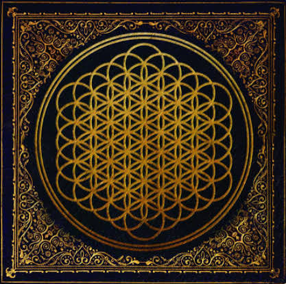
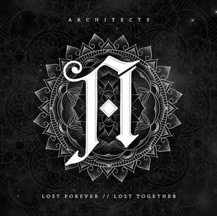
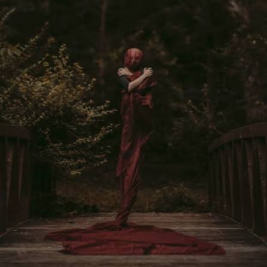

2013Sempiternal
Bring Me The Horizon
Metalcore Timeline
← Voltar para a página principalO metalcore ficou mais melódico e acessível nessa década, com refrões cantáveis, teclados e uma produção mais polida. Foi o momento em que o gênero conquistou um público bem maior.

2013Bring Me The Horizon

2014Architects

2016Bad Omens